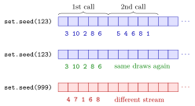

Random Seed¶
Definition¶
Random numbers in R are pseudo-random: a deterministic algorithm, the random-number generator, produces a stream of numbers that behave like independent random draws but are completely determined by its starting state. The seed is the value that fixes this starting state. After
the same random-number calls, made in the same order with the same generator settings, give exactly the same results every time and on every computer.
Every function that draws random numbers, such as sample(), rnorm() or rpois(), takes its numbers from the same stream and moves it forward.
Interpretation¶
A seed turns "random" into "reproducible". Without it, every run of a simulation gives slightly different numbers; with set.seed() at the top of a script, you, a classmate and a grader all get identical draws and can compare results.

The figure shows the stream as a row of cells. set.seed(123) puts the generator at the start of a fixed stream; the first sample() call uses the first few numbers and the second call continues where the first stopped, which is why two calls in a row give different draws. Running the same code again after set.seed(123) walks through the identical stream (middle row); seed 999 starts a different one (bottom row).
The guarantee has three conditions: the same seed, the same calls in the same order, and the same generator settings. Inserting one extra random call in the middle of a script changes every draw after it. The settings matter too: since R 3.6.0, sample() uses a method called "Rejection" sampling, while older versions used "Rounding", so code written for an old R gives different draws from sample() today even with the same seed (Example 4). RNGkind() shows the current settings. Fixing the seed does not make the draws less random in the sense of probability: averages over many draws still behave as the theory predicts.
The common mistake is calling set.seed() inside a loop or inside replicate(). Every repetition then restarts the same stream and produces the same "random" outcome, so a simulation of a thousand experiments is really one experiment copied a thousand times. Set the seed once, at the top.
Key Results¶
set.seed(n)for a whole numbernfixes the generator; repeating the same random calls in the same order then reproduces the same values.- Each random call moves the stream forward, so consecutive calls after one
set.seed()give different values. - The seed affects every random function in R:
sample(),rnorm(),rbinom(),rpois(),runif()and so on. RNGkind()reports the generator settings; the defaults since R 3.6.0 are"Mersenne-Twister","Inversion"and"Rejection".- Set the seed once at the top of a script, not inside loops or functions that are repeated.
Examples¶
1. Same seed, same draws.
set.seed(123)
sample1 <- sample(1:10, size = 5)
sample1
#> [1] 3 10 2 8 6
set.seed(123)
sample2 <- sample(1:10, size = 5)
sample2
#> [1] 3 10 2 8 6
identical(sample1, sample2)
#> [1] TRUE
set.seed(999)
sample(1:10, size = 5)
#> [1] 4 7 1 6 8
Resetting the seed to 123 repeats the draws exactly; seed 999 starts a different stream.
2. Consecutive calls continue the stream.
set.seed(123)
sample(1:10, size = 5)
#> [1] 3 10 2 8 6
sample(1:10, size = 5)
#> [1] 5 4 6 8 1
round(rnorm(3), 4)
#> [1] -1.2651 -0.6869 -0.4457
The second call does not repeat the first: it continues from where the first stopped. rnorm() draws from the same stream, so its values depend on the two sample() calls before it.
3. Setting the seed inside the repetition.
replicate(5, {
set.seed(1)
sample(1:6, size = 1)
})
#> [1] 1 1 1 1 1
set.seed(1)
replicate(5, sample(1:6, size = 1))
#> [1] 1 4 1 2 5
With the seed inside, five "rolls of a die" all give the same number. With the seed set once before replicate(), the rolls vary as real rolls would, and the whole result is still reproducible.
4. Generator settings.
RNGkind()
#> [1] "Mersenne-Twister" "Inversion" "Rejection"
suppressWarnings(set.seed(123, sample.kind = "Rounding"))
sample(1:10, size = 5)
#> [1] 3 8 4 7 6
RNGkind(sample.kind = "Rejection")
The second line switches sample() back to the method of R versions before 3.6.0 (R warns that this method is slightly non-uniform, and suppressWarnings() hides that message here). The draws differ from Example 1 although the seed is again 123. The last line restores the default.
Prerequisites¶
Related Concepts¶
- The r, d, p, q Distribution Functions
- Monte Carlo Simulation
- Checking Distributions by Simulation
- R and RStudio
Sources¶
- Programming for EOR · Week 5
- Lecture 5 script, Matrix operations, random numbers and optimisation, section "The seed"
Aliases: set.seed(), set.seed, seed, pseudo-random numbers, RNGkind(), reproducible random numbers Keywords: pseudo-random numbers, set.seed(), reproducibility, random-number generator
Last updated: 10 November 2026 16:43
Random SeedChecking Distributions by SimulationRandom Sampling with sample()The r, d, p, q Distribution FunctionsMonte Carlo SimulationR and RStudio